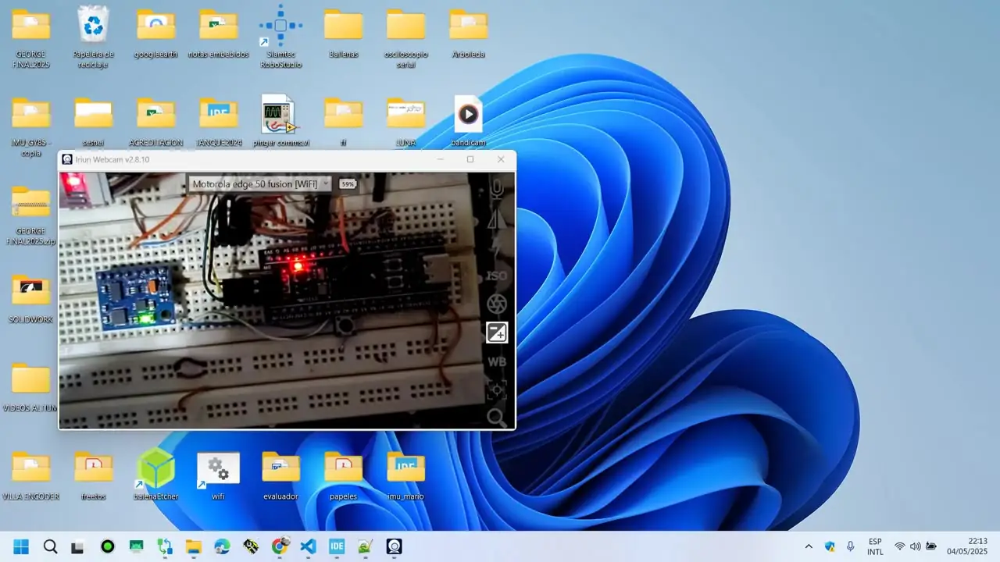

Crea el proyecto (imu_gy85) y en el .ioc activa:
- I2C1 para el GY-85.
- TIM9 con reloj interno, para el tiempo de muestreo.
- USART1 para enviar los datos.
- Cristal externo y PLL a máxima velocidad.
El GY-85 es una IMU de 9 grados de libertad por I2C: acelerómetro ADXL345, giroscopio ITG3205 y magnetómetro. Con la librería GY85 se inicializa el sensor, se leen los tres instrumentos, se calculan los ángulos con el acelerómetro y se combinan con el giroscopio mediante un filtro complementario y un filtro de Kalman (kalman.c), que da ángulos más estables. El muestreo puede hacerse con un timer (TIM9) o con uwTick y un tiempo fijo. Los resultados se ven por serial y graficados.

Crea el proyecto (imu_gy85) y en el .ioc activa:
Copia GY85, kalman, timer y uart a la carpeta Librerias, agrégala a las rutas de include e inclúyelas en main.c.
En GY85.h se indica qué I2C y qué timer se usan. Si no usas timer, deja definido el tiempo de muestreo en milisegundos; si usas timer, deja esa línea comentada.
#define imu_i2c hi2c1
#define TIMIMU TIM9 // timer a usar
#define htimimu htim9
// Comentar si usa timer; si no, poner el tiempo de muestreo
//#define tiempo_muestreo 10.0 // en milisegundosGY85_Init devuelve 1 si el sensor responde.
uartx_write_text(&huart1, "INICIANDO\r\n");
if (GY85_Init() != 1) uartx_write_text(&huart1, "SENSOR NO CONECTADO\r\n");
else uartx_write_text(&huart1, "CONECTADO\r\n");Funciones principales de la librería:
GY85_Read_ace();
GY85_Read_giro();
GY85_Read_bruj();
GY85_Ace_angulos();
sprintf(texto, "AC_roll=%.1f AC_pitch=%.1f\r\n\r\n", acel_roll, acel_pitch);
uartx_write_text(&huart1, texto);
HAL_Delay(800);Los filtros necesitan un tiempo de muestreo constante. Sin timer se usa uwTick: se lee cada tiempo_muestreo milisegundos.
tiempo_imu = uwTick; // antes del while
while (1)
{
if (uwTick - tiempo_imu >= tiempo_muestreo)
{
tiempo_imu = uwTick;
GY85_Read_ace();
GY85_Read_giro();
GY85_Read_bruj();
GY85_Ace_angulos();
Filtro_Complementario();
filtro_kalman();
}
}Combina el ángulo del acelerómetro (estable pero ruidoso) con el del giroscopio (suave pero con deriva). Compara en la gráfica el ángulo del acelerómetro con el filtrado (compAngle_Roll, compAngle_Pitch).
sprintf(texto, "%.1f,%.1f\r", acel_pitch, compAngle_Pitch);
uartx_write_text(&huart1, texto);En kalman.c están los parámetros del modelo: Q_angle y Q_bias (ruido del proceso) y R_measure (ruido de la medida del acelerómetro). Valores más altos de Q reaccionan más rápido; un R más alto confía menos en el acelerómetro. Se inicializa un filtro para roll y otro para pitch.
Kalman_Init(&kalman_roll_);
Kalman_Init(&kalman_pitch_);
// dentro de filtro_kalman():
kalman_roll = Kalman_Update(&kalman_roll_, acel_roll, imu.giro_x_f, muestreo);
kalman_pitch = Kalman_Update(&kalman_pitch_, acel_pitch, imu.giro_y_f, muestreo);Envía los tres ángulos separados por comas para graficarlos juntos: acelerómetro, complementario y Kalman. Al final el muestreo se pasa al timer con TIMERIMU_Init() y en el while solo se imprime el resultado.
TIMERIMU_Init(); // el timer hace las lecturas y los filtros
while (1)
{
sprintf(texto, "roll=%.1f pitch=%.1f\r\n\r\n", kalman_roll, kalman_pitch);
uartx_write_text(&huart1, texto);
HAL_Delay(800);
}Con el GY-85 conectado a la Black Pill, inclina el módulo y observa cómo cambian roll y pitch.